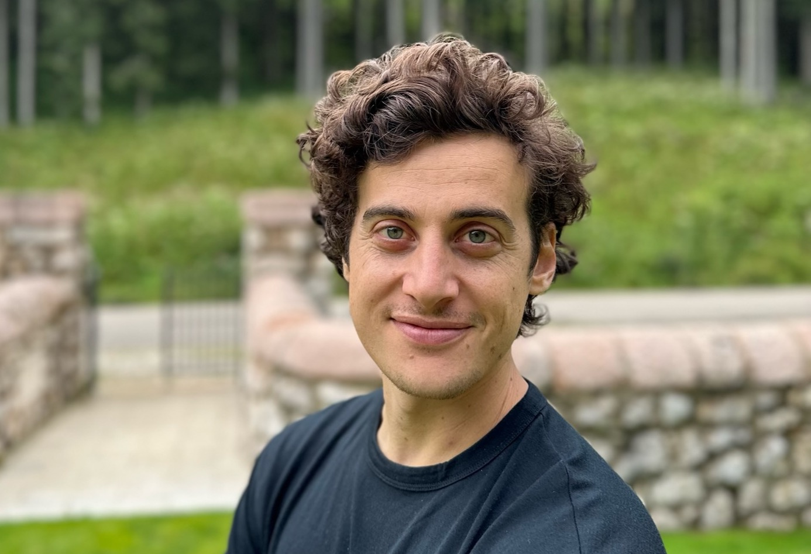

I hold a Doctorate in Veterinary Medicine and have been engaged in professional beekeeping for over 15 years. My doctoral research, conducted at the Institute of Bee Health in Bern, Switzerland, focused on the study of managed honey bee populations surviving Varroa destructor through natural selection. Currently, I work as a Post-Doc researcher at the Galway Honey Bee Research Center within the University of Galway, Ireland. My work involves the study of free-living honey bee colonies across Ireland. Additionally, I am a co-founder of Honey Bee Watch, an international coalition dedicated to the study of wild and untreated surviving honey bees.

Email: arrigo.moro@universityofgalway.ie
ORCID: 0000-0002-2410-6462
ResearchGate: Arrigo Moro
| 2023 | Smith, S., Moro, A., & McCormack, G. P. (2023). Exploring a Potential Avenue for Beekeeping in Ireland: Safeguarding Locally Adapted Honeybees for Breeding Varroa-Resistant Lines. Insects, 14(10), 827. https://doi.org/10.3390/insects14100827 |
| 2021 |
Dall’Olio, R., Mondet, F., Beaurepaire, A., Gabel, M., Locke, B., Moro, A., Panziera, D., & Neumann, P. (2021). COLOSS Survivors Task Force: Global Efforts to Improve Honey Bee Colony Survival. Bee World, 1–3. https://doi.org/10.1080/0005772X.2021.1988445
Moro, A., Beaurepaire, A., Dall’Olio, R., Rogenstein, S., Blacquière, T., Dahle, B., de Miranda, J. R., Dietemann, V., Locke, B., Licón Luna, R. M., Le Conte, Y., & Neumann, P. (2021). Using Citizen Science to scout honey bee colonies that naturally survive Varroa destructor infestations. Insects, 12(6), 536. https://doi.org/10.3390/insects12060536 Moro, A., Blacquière, T., Panziera, D., Dietemann, V., & Neumann, P. (2021). Host-parasite co-evolution in real-time: Changes in honey bee resistance mechanisms and mite reproductive strategies. Insects, 12(2), 120. https://doi.org/10.3390/insects12020120 Moro, A., Blacquière, T., Dahle, B., Dietemann, V., Le Conte, Y., Locke, B., Neumann, P., & Beaurepaire, A. (2021). Adaptive population structure shifts in invasive parasitic mites, Varroa destructor. Ecology and Evolution. https://doi.org/10.1002/ece3.7272 |
| 2019 |
Beaurepaire, A. L., Moro, A., Mondet, F., Le Conte, Y., Neumann, P., & Locke, B. (2019). Population genetics of ectoparasitic mites suggest arms race with honeybee hosts. Scientific Reports, 9(1), 11355. https://doi.org/10.1038/s41598-019-47801-5
Blacquière, T., Boot, W., Calis, J., Moro, A., Neumann, P., & Panziera, D. (2019). Darwinian black box selection for resistance to settled invasive Varroa destructor parasites in honey bees. Biological Invasions, 21(8), 2519–2528. https://doi.org/10.1007/s10530-019-02001-0 Moro, A., & Mutinelli, F. (2019). Field evaluation of Maqs® and Api-Bioxal® for late summer control of Varroa mite infestation in Northesastern Italy. Journal of Apicultural Research, 58(1), 53–61. https://doi.org/10.1080/00218839.2018.1494921 |